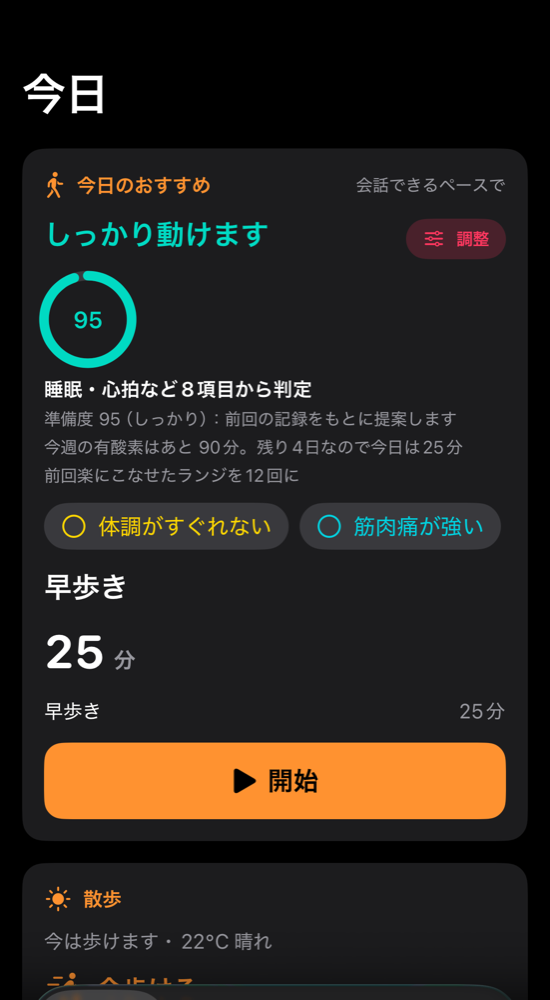
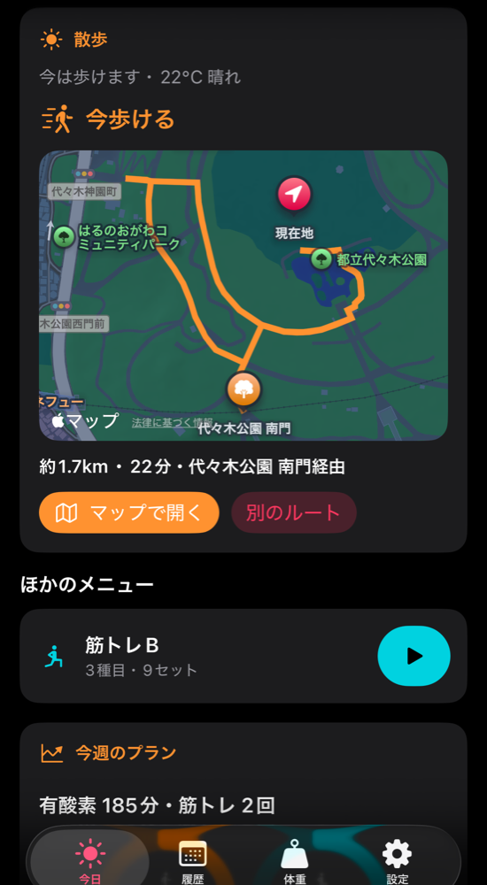

カラダナビ 今日の運動と散歩ルート｜iPhone アプリ
開くだけで今日の運動と散歩ルートが決まる運動アプリです。「何を・どれだけ・どこで」運動するかを、アプリが毎日決めます。自分でプランを立てるのが苦手な人、歩くルートを考えるのが面倒な人のためのアプリです。
iPhone だけで使えます。Apple Watch は、お持ちの場合に調子の判定がより細かくなる任意の連携です。
App Store で入手するiPhone（iOS 27 以降）で使えます。ダウンロードは無料で、記録・履歴・3D の種目解説・体重のグラフは無料で使えます。今日のおすすめ・週のプラン・天気と散歩ルートはプレミアム（月額480円または年額3,800円。日本の価格）です。初めての方は1か月無料（購入画面に表示された場合）。


画面はイメージです（デモ表示。実際の表示は、お使いの状況や iOS のバージョンで異なります）。
カラダナビでできること
開くだけで、今日の運動が決まるプレミアム
これまでの運動の記録とヘルスケアの睡眠から、その日の量を調整します。入力は要りません。Apple Watch があれば、心拍や皮膚温も加えて、より細かく判定します。無料版では、曜日ごとの基本メニューを表示します。
歩くルートも、天気も、おまかせプレミアム
今日の天気から歩ける時間を判定し、近くの公園を通って戻るルートを提案します。雨の日は、家でできるメニューに切り替えます。
目標から逆算した、今週のプランプレミアム
目標体重とペースを決めると、今週の有酸素運動の時間と筋トレの回数を計算します。
目標まで、あと何週かが分かるプレミアム
目標までのカウントダウンで、進み具合がひと目で分かります。体重のグラフは無料版でも使えます。
動きは3Dで、ひと目で分かる無料
種目の動きを3Dで確認でき、効いている筋肉も色で表示します。
運動と散歩のためのアプリです。食事の記録や写真の解析は行いません（食事の目安は、一般的な計算で表示します）。
動作環境
- iPhone（iOS 27 以降）。Apple Watch がなくても使えます
- Apple Watch（watchOS 27 以降）は、あればより便利です（記録・心拍の表示、調子の判定の精度）
よくある質問
Apple Watch がなくても使えますか？
使えます。今日のメニュー、週のプラン、散歩ルート、記録は iPhone だけで使えます。調子の判定は、Apple Watch がない場合、これまでの運動の記録とヘルスケアの睡眠をもとに行います。
無料で使える範囲と、プレミアムの違いは？
無料版では、記録・履歴、3D の種目解説、曜日ごとの基本メニュー、体重のグラフが使えます。プレミアム（月額480円または年額3,800円。日本の価格）では、調子に合わせた今日のおすすめ、目標から逆算した週のプランと目標までのカウントダウン、天気と散歩ルート、雨の日の自動切り替えが使えます。初めての方は1か月無料です（購入画面に表示された場合）。
解約するには？
iPhone の「設定」アプリ → 自分の名前 →「サブスクリプション」→「カラダナビ」から解約できます。無料体験や期間の終了の24時間以上前までに解約すれば、自動更新による料金はかかりません。解約しない限り、自動で更新されます。
機種変更したら、購入は引き継げますか？
同じ Apple ID でサインインし、アプリの「設定」→「購入を復元」を押してください。
健康データはどこかに送られますか？
アプリは、健康データを端末の中だけで扱い、外部に送りません。天気と散歩ルートのために、現在地だけを Apple のサービス（WeatherKit・マップ）に送ります。アプリには広告や解析のツールは入っていません。なお、このサポートサイト自体は、閲覧状況の把握に Google アナリティクスを使っています（アプリとは別です）。詳しくはプライバシーポリシーをご覧ください。
ヘルスケアのデータが表示されません
「ヘルスケア」アプリ →（右上の人のアイコン）→「アプリ」→「カラダナビ」で、読み取りを許可してください。アプリの「設定」に「ヘルスケアの追加項目を確認する」が出ている場合は、押して許可してください。
天気や散歩ルートが出ません
プレミアムで、アプリの「設定」の「天気と散歩ルートを使う」がオンになっているか、位置情報が「使用中のみ許可」になっているかを確認してください。
運動してよいか不安です
カラダナビは医療機器ではなく、医師の診断や判断の代わりになるものではありません。持病のある方や運動に不安のある方は、始める前に医師にご相談ください。運動中に胸の痛み・めまい・息苦しさなどを感じたら、すぐに中止してください。
お問い合わせ
ご意見・不具合のご報告は、メールでお送りください。
運営者：カラダナビ運営事務局
メール：karadanavi.support@gmail.com
規約とポリシー
このサイトは、閲覧状況の把握に Google アナリティクスを使っています（アプリとは別です）。詳しくはプライバシーポリシーの第8項をご覧ください。
最終更新日：2026年10月11日